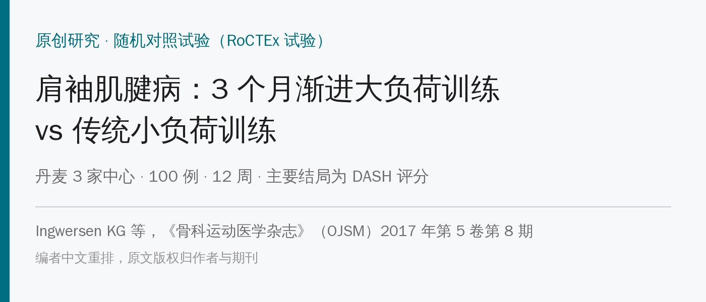
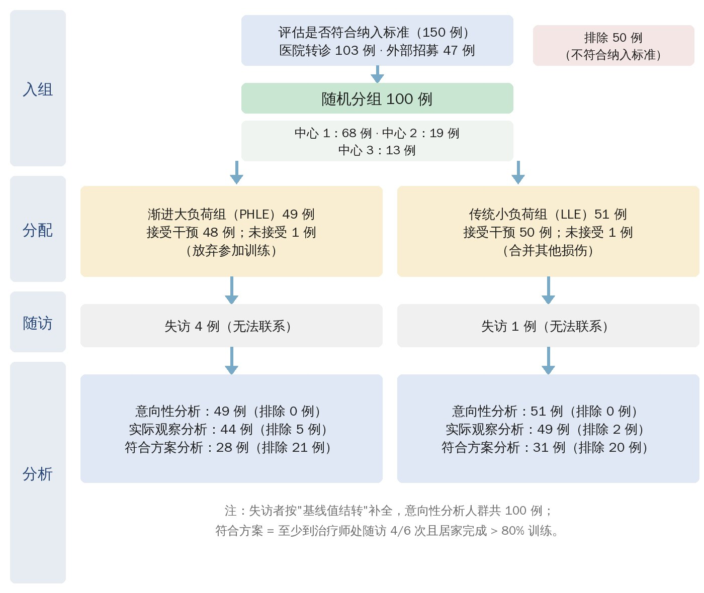
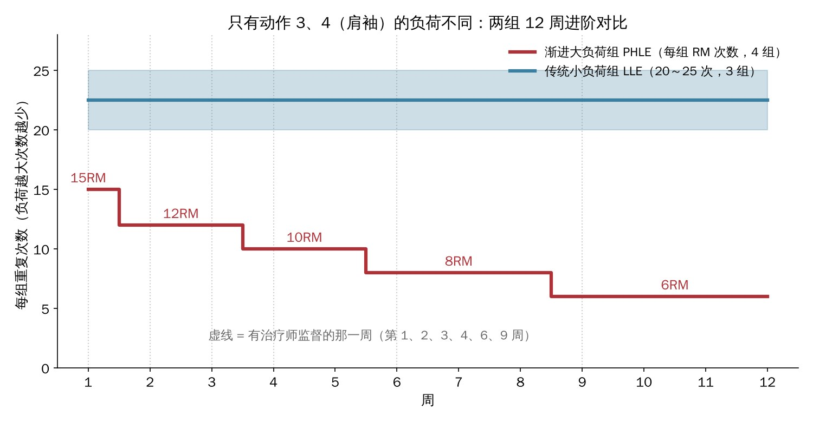
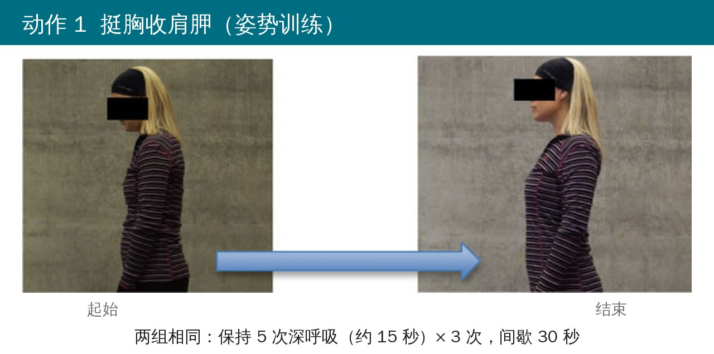
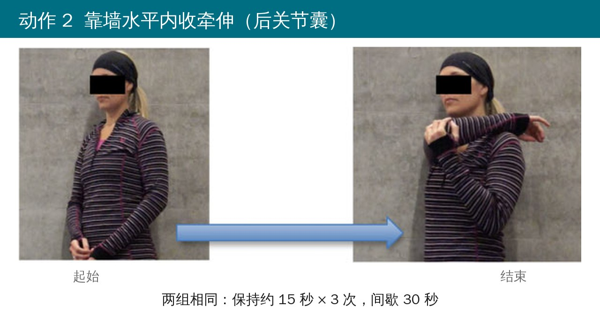
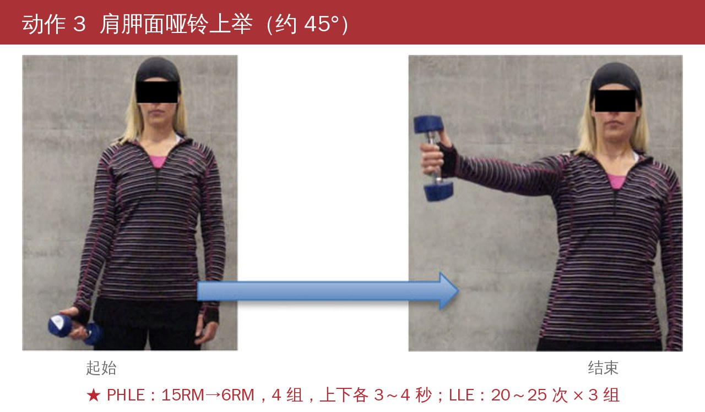
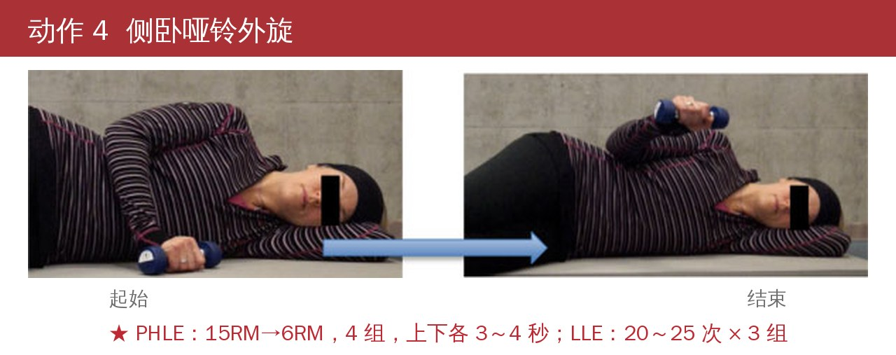
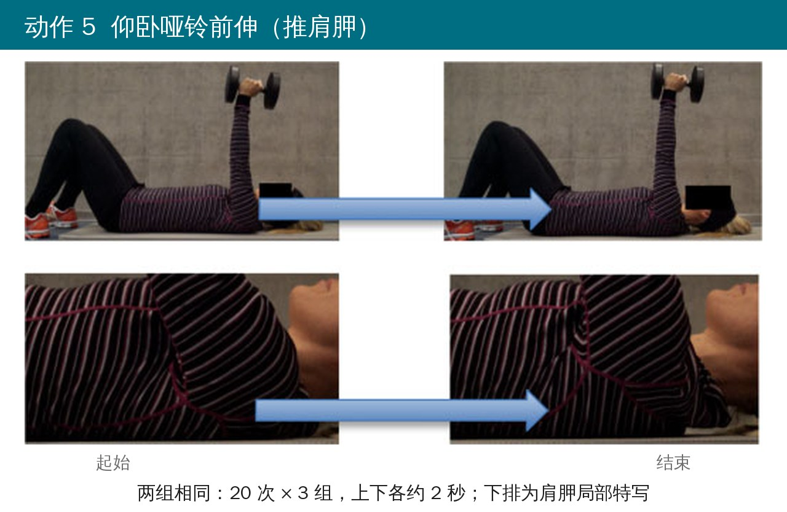
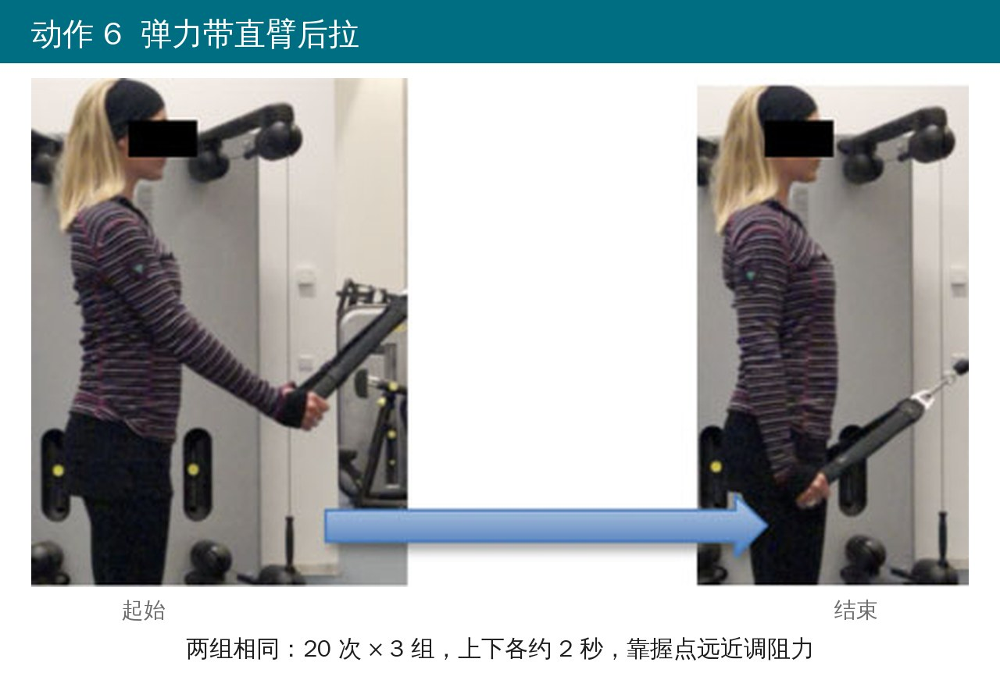
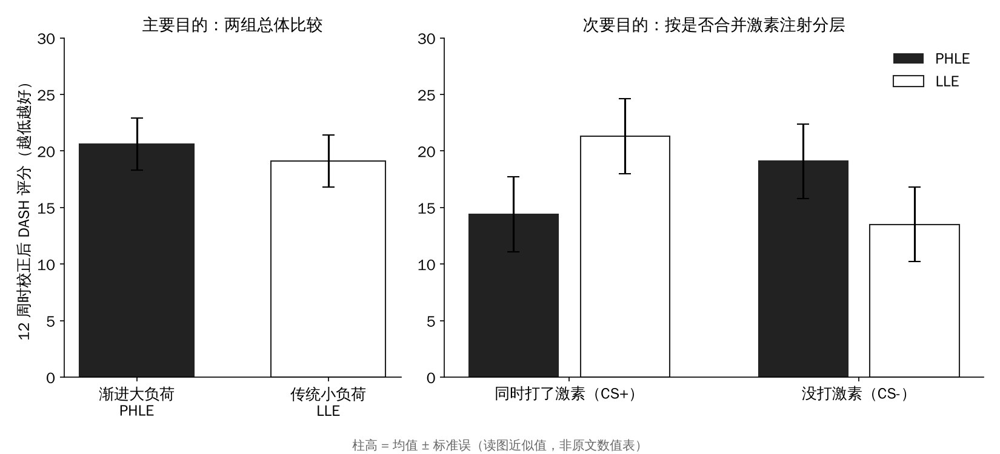

🔖原文信息（编者中文重排）
📚 文献信息
▪ Ingwersen KG, Jensen SL, Sørensen L, et al. Three Months of Progressive High-Load Versus Traditional Low-Load Strength Training Among Patients With Rotator Cuff Tendinopathy: Primary Results From the Double-Blind Randomized Controlled RoCTEx Trial. Orthop J Sports Med. 2017;5(8):2325967117723292.
▪ 作者来自丹麦南丹麦大学及瓦埃勒医院等
▪ 随机对照试验，ClinicalTrials.gov 注册号 NCT01984203；DOI：10.1177/2325967117723292
这几年做肌腱病康复，大家基本都认一个思路：肌腱要“喂”够负荷。髌腱、跟腱上，重负荷慢速训练（HSR）的效果已经和离心训练打平甚至更好。于是很自然会想：肩袖肌腱是不是也该上大重量？
但肩关节和膝、踝不一样。肩袖本身疼的时候，大脑会抑制它发力，三角肌就顶上去代偿，你以为加的是肩袖的负荷，实际未必压到了肌腱上。丹麦这个 RoCTEx 试验就是拿真实病人来比：同一套 6 个动作，只在 2 个肩袖动作上一组加重量、一组不加，练 12 周看谁好得多。
先说结论：12 周后两组都有改善，但大负荷组并没有比小负荷组更好。主要结局 DASH 评分两组只差 1.4 分，P = 0.61。倒是有个意外发现：同时打了激素的病人，大负荷组效果更好；没打激素的反过来。
• 对象：丹麦 3 家中心 100 名肩袖肌腱病患者，18～65 岁，症状至少 3 个月、上臂近端外侧疼、外展时加重；超声确认肩袖肌腱病变，并且满杯试验 / Jobe / 抗阻外旋至少 1 项阳性 + Hawkins-Kennedy 或 Neer 至少 1 项阳性
• 排除：静息痛 > 40/100、主动上举 < 90°、超声见全层撕裂、6 周内打过激素、有其他竞争诊断
• 分组：渐进大负荷组（PHLE）49 人，传统小负荷组（LLE）51 人；按中心和是否同时打激素分层随机
• 激素是否注射由骨科医生按常规判断（夜间痛、活动痛明显，超声见滑囊炎或钙化灶周围血流），在基线评估后、随机之前打
• 主要结局：12 周 DASH 评分变化（0～100，分越高功能越差）；次要结局：疼痛 VAS、等长肌力、主被动活动度、超声表现
• 病人知道在练“两种主动训练”，但不知道区别和假设；评估者对分组设盲

🔖原文图 1 受试者流程（中文重绘）
两组用的是同一套 6 个动作：2 个肩胛稳定（动作 1、5、6 里练前锯肌、斜方肌）、2 个肩袖力量（动作 3、4）、2 个活动度。肩袖动作是按“肩袖激活高、三角肌相对低、撞击风险小”挑的：肩胛面上举和侧卧外旋。
• 监督：第 1 周治疗师一对一教 60 分钟；第 2、3、4、6、9 周各来一次 30 分钟复查调整，其余时间居家每周练 3 次
• 唯一的区别：动作 3、4 的负荷。PHLE 从 15RM 一路加到 6RM，4 组；LLE 一直用 20～25RM，3 组
• 依从性的标准：6 次复查至少来 4 次，且居家训练日记完成率 > 80%

🔖两组肩袖动作的负荷进阶（编者根据原文附录 A、B 绘制）
附录里给病人的说明写得很细，这一段其实比动作本身更值得抄下来：
• 练的时候肩有点疼是正常的，但疼痛不能超过 5/10（大约是“能忍、但不觉得在受伤”的程度）
• 练完 30 分钟内要回落到练之前的水平；第二天不能比前一天更疼
• 如果练完不回落、或者第二天更疼：负荷先减一半，再用 3～4 次训练慢慢加回去；还不行就联系治疗师
• 吃了止痛药，疼痛会被压低，但还是按同样的规则判断
• 所有动作都要慢、要控制，找一个不被打扰的时间练

🔖动作 1 挺胸收肩胛
从弯腰驼背的姿势开始，想象把胸骨和肚脐之间的距离拉长，直到背挺直；保持这个姿势，再慢慢把两侧肩胛骨往中间夹。保持 5 次深呼吸（约 15 秒），然后完全放松回到驼背，重复 3 次，每次之间休息约 30 秒。

🔖动作 2 靠墙水平内收牵伸
背挺直，患侧肩胛骨贴住墙（固定肩胛，牵伸才落在后方关节囊上），对侧手抓住患侧上臂/肘的后面，把肘往对侧肩方向带。肘尽量保持在肩的高度，疼就降一点。保持约 15 秒，重复 3 次。

🔖动作 3 肩胛面哑铃上举（肩袖动作，两组负荷不同）
站直、肩稍往后（同动作 1 的姿势），手心略朝前、拇指朝外，在身体前外侧 45°（屈和外展中间）把哑铃举到水平。
• LLE：上 2 秒、下 2 秒，20～25 次 × 3 组，组间 30 秒；比计划多或少 5 次就调重量
• PHLE：上 3～4 秒、下 3～4 秒，4 组，组间 30 秒；次数按周递减：第 1 周 15 次 → 第 2～3 周 12 次 → 第 4～5 周 10 次 → 第 6～8 周 8 次 → 第 9～12 周 6 次；能多做 2 次就加重
• PHLE 特别交代：重点是负荷，不是幅度。如果疼得举不起来，只把哑铃抬起一点点、然后用力静止保持也可以（相当于等长收缩）；能做全程当然做全程

🔖动作 4 侧卧哑铃外旋（肩袖动作，两组负荷不同）
健侧卧，背伸直，双腿微屈保持平衡。上方手臂贴着身体，肘放在肋骨和髋之间，屈 90°，手大约在肚脐前；肩胛稍往后收。握哑铃慢慢外旋往天花板方向抬，最多到前臂竖直。整个过程肘的位置不动、身体不动，只有前臂在转；放下时在碰到地面前停住，再开始下一次。
负荷和节奏同动作 3：LLE 20～25 次 × 3 组；PHLE 15RM → 6RM × 4 组，上下各 3～4 秒，也允许小幅度 + 静止保持。

🔖动作 5 仰卧哑铃前伸（推肩胛）
屈膝仰卧，手持哑铃把手臂竖直举向天花板（需要的话用另一只手帮忙就位），肩/肩胛先贴住床面。然后用肩胛往上推，让哑铃尽量往天花板走，但只让肩胛离开床面，躯干不要转。上下各约 2 秒，20 次 × 3 组。两组相同。

🔖动作 6 弹力带直臂后拉
弹力带中间固定在与肩同高的地方（楼梯扶手、暖气管、门铰链都行），双手握在治疗师做好的标记处，人站在 1.5 米左右外。背挺直、肩稍往后，直臂慢慢往后下方拉，拉到手到髋的外侧，再慢慢回去，回程也要保持挺胸收肩。上下各约 2 秒，20 次 × 3 组。
阻力靠握点调：太重（比计划少 5 次）就往两端握、重新做标记；太轻（能多 5 次）就往固定点方向握。两组相同。
12 周后，DASH 评分大负荷组改善 7.1 分，小负荷组改善 8.4 分，组间差 −1.37（95% CI −6.72～3.99，P = 0.61）。疼痛（静息、活动、夜间、最痛）、肌力、活动度也都没有组间差异。按实际观察和按方案分析，结论一样。
两组自身都在变好：DASH、活动痛、夜间痛、最痛、肌力都有明显改善，只有静息痛没怎么动。但要注意，7～8 分的改善低于 DASH 的最小临床重要差异（约 10.5 分）——这和大家的基线本来就不高（约 24 分）有关，天花板太低。

🔖原文图 2 主要与次要目的结果（中文重绘，柱高为读图近似值）
细节一：激素 × 训练类型存在交互作用（P = 0.028）。打了激素的人里，PHLE 比 LLE 多改善 6.92 分（95% CI −2.11～15.96）；没打激素的人里，反而是 LLE 多改善 5.63 分（95% CI −12.10～0.83）。两边单看都不显著。作者的解释是激素压住了疼痛、解除了对肩袖的抑制，开了一个“机会窗口”，让大负荷真正压到肌腱上。
细节二：超声上，在按方案练够的人里，PHLE 组新生血管消失的比例明显更高（减少 28.6% 对 9.7%，P = 0.039）。但这只是符合方案分析，意向性分析里不显著（P = 0.163）。另外，按训练日记，PHLE 组肩袖动作的实际负荷大约是 LLE 的 2 倍，说明两组确实练出了差别。
不良事件：两组各有约三成病人至少有一次“练完痛超过 1 小时”，约四分之一有“练完无力超过 1 小时”，组间无差异。期间 3 人因症状加重转去手术。
• 样本量不够：方法里写的是“每组需要 100 人”，实际两组加起来才 100 人；作者又说最终检验效能 0.84，两个说法对不上。激素交互作用那部分需要 260 人，这里明显效能不足，只能算提出假设
• 题目写“双盲”：病人对“哪组是重的”不知情、评估者设盲，但治疗师显然知道自己在教哪套，严格说不算双盲
• 依从性只有六成（57% 和 61%），大负荷方案如果很多人没练足，组间差异自然被稀释
• 基线 DASH 只有 24 分左右，比样本量计算时假设的 40 分低得多，改善空间有限
• 12 周对肌腱重塑可能太短；只看到 12 周，没有长期随访
• 原文有几处小矛盾：图 1 写 PHLE 组 1 人“放弃训练”、LLE 组 1 人“合并损伤”，图注却反过来；表 4 中 CS+ 亚组 LLE 的组内变化和组间差都是 6.92，可能有抄录错误；附录表 A1 里有几处点估计落在置信区间外（如 −3.75，CI −1.95～3.45）、一处 CI 写成“−194”，表 A2 静息痛缺 P 值
这篇最实在的价值，是给了一套写得很清楚、能直接拿来用的肩袖肌腱病居家方案：6 个动作、每周 3 次、6 次复查，疼痛规则明确。至于“要不要上大重量”，它的答案是：12 周内，小负荷高次数和大负荷低次数效果差不多。
所以实际操作上不必死磕重量。病人怕疼、依从性一般的，20～25 次的小负荷完全够用；病人耐受好、想练力量，或者刚打过激素疼痛控制住了，可以考虑按 15RM → 6RM 的节奏往上推，疼得厉害时用小幅度 + 静止发力代替全程。不管哪种，疼痛 ≤ 5/10、30 分钟回落、第二天不加重这条线都要守住。
至于激素后做大负荷更好这个发现，目前只是个线索，样本太小，不能当成常规做法。
原文表 1 两组基线特征（PHLE 49 人，LLE 51 人）
| 项目 | PHLE | LLE |
|---|---|---|
| 年龄（岁） | 45.7 ± 10.6 | 46.5 ± 10.1 |
| 女性 | 19（38.9%） | 27（52.9%） |
| BMI | 26.5 ± 3.5 | 25.3 ± 3.6 |
| 病程（月），中位数（范围） | 12.0（3～180） | 12.0（3～180） |
| 起病：意外或急性损伤 | 14（29.8%） | 17（33.3%） |
| 起病：慢慢发展（过度使用） | 13（27.7%） | 18（35.3%） |
| 起病：不清楚 | 20（42.6%） | 16（31.4%） |
| 优势侧受累 | 29（59.2%） | 34（66.7%） |
| 基线时病假 | 2（4.1%） | 0 |
| 当前工作体力强度（0～10） | 3.8 ± 2.4 | 2.8 ± 1.9 |
| 既往重体力工作 | 9（20.0%） | 9（17.7%） |
| 基线时激素注射 | 17（34.7%） | 17（33.3%） |
| 训练依从 | 28（57%） | 31（61%） |
| 每次训练用止痛药次数，中位数（范围） | 0.0（0.0～4.5） | 0.0（0～0.3） |
| 基线后又打激素 | 0 | 1（2.0%） |
| 基线后转手术 | 2（4.1%） | 1（2.0%） |
| ≥ 1 次练后疼痛加重 > 1 小时 | 13（30.2%） | 18（36.7%） |
| ≥ 1 次练后力量下降 > 1 小时 | 11（25.6%） | 12（24.5%） |
| DASH 主模块（日常活动） | 24.3 ± 11.2 | 24.6 ± 12.0 |
| DASH 兴趣爱好模块 | 42.2 ± 28.0 | 37.5 ± 24.7 |
| DASH 工作模块 | 19.5 ± 21.0 | 18.0 ± 22.2 |
| HAD 抑郁 | 2.7 ± 3.1 | 1.4 ± 2.4 |
| HAD 焦虑 | 5.0 ± 3.6 | 3.3 ± 3.2 |
| VAS 静息痛 | 10.7 ± 10.6 | 7.7 ± 8.8 |
| VAS 活动痛 | 37.1 ± 18.3 | 37.9 ± 17.1 |
| VAS 夜间痛 | 38.4 ± 23.8 | 34.3 ± 24.0 |
| VAS 最痛 | 71.0 ± 15.0 | 71.9 ± 13.2 |
| 等长肌力 肩胛面上举（N/kg） | 0.42 ± 0.20 | 0.42 ± 0.21 |
| 等长肌力 外旋 | 0.23 ± 0.09 | 0.23 ± 0.10 |
| 等长肌力 内旋 | 0.32 ± 0.14 | 0.31 ± 0.15 |
| 被动 ROM 肩胛面上举（°） | 149.1 ± 16.9 | 152.1 ± 15.5 |
| 被动 ROM 外旋 | 92.1 ± 26.4 | 88.9 ± 24.6 |
| 被动 ROM 内旋 | 52.0 ± 14.4 | 50.9 ± 15.4 |
| 主动 ROM 肩胛面上举 | 136.9 ± 19.4 | 143.4 ± 17.1 |
| 主动 ROM 外旋 | 77.5 ± 24.1 | 75.2 ± 24.0 |
| 主动 ROM 内旋 | 44.6 ± 13.3 | 44.2 ± 14.4 |
| 超声：纤维结构紊乱 | 44（89.8%） | 46（90.2%） |
| 超声：新生血管 | 24（49.0%） | 21（41.2%） |
| 超声：肌腱增厚 | 16（32.7%） | 12（23.5%） |
| 超声：钙化 | 18（36.7%） | 21（41.2%） |
均值 ± 标准差或例数（%）。DASH 0～100；HAD 0～21；VAS 0～100。部分项目有缺失，分母略少于 100。基线时 PHLE 组 HAD 评分显著更高。
原文表 2 意向性分析（100 人）12 周变化
| 指标 | PHLE 组内变化 | LLE 组内变化 | 校正后组间差 | P |
|---|---|---|---|---|
| DASH 主模块 | 7.11（3.07～11.16） | 8.39（4.35～12.44） | −1.37（−6.72～3.99） | .61 |
| DASH 兴趣爱好 | 9.38（1.31～17.44） | 9.47（−1.45～20.38） | −2.13（−14.43～10.17） | .73 |
| DASH 工作 | 3.20（−2.83～9.23） | 3.49（−1.32～8.30） | −1.00（−7.78～5.79） | .77 |
| VAS 静息 | 1.55（−2.16～5.26） | 1.02（−1.66～3.70） | −1.05（−5.07～2.97） | .61 |
| VAS 活动 | 11.14（5.42～16.86） | 14.07（8.83～19.33） | −2.65（−9.69～4.38） | .46 |
| VAS 夜间 | 12.57（5.67～19.48） | 15.75（8.93～22.56） | −5.01（−13.30～3.28） | .23 |
| VAS 最痛 | 15.14（7.63～22.66） | 17.14（10.68～23.59） | −2.04（−11.97～7.89） | .69 |
| 肌力 上举 | 0.07（0.03～0.11） | 0.07（0.03～0.10） | 0.00（−0.05～0.06） | .95 |
| 肌力 外旋 | 0.03（0.02～0.05） | 0.04（0.02～0.06） | 0.00（−0.02～0.02） | .85 |
| 肌力 内旋 | 0.07（0.04～0.09） | 0.07（0.05～0.10） | −0.01（−0.05～0.03） | .71 |
| 被动 上举 | 2.84（−0.92～6.60） | 3.86（0.62～7.09） | −1.93（−6.53～2.68） | .41 |
| 被动 外旋 | 3.84（0.32～7.35） | 4.94（0.01～9.88） | −0.51（−6.48～5.47） | .87 |
| 被动 内旋 | −0.10（−2.60～2.40） | −0.12（−3.60～3.36） | 0.35（−3.68～4.38） | .86 |
| 主动 上举 | 7.38（2.16～12.61） | 3.50（−0.89～7.88） | 0.66（−5.25～6.56） | .83 |
| 主动 外旋 | 5.38（1.11～9.66） | 5.23（−0.54～10.99） | 1.04（−5.49～7.58） | .75 |
| 主动 内旋 | 1.68（−1.16～4.52） | 0.61（−2.62～3.85） | 1.20（−2.81～5.21） | .55 |
均值（95% CI）。DASH、VAS 为改善值（正数 = 变好）；肌力单位 N/kg 体重；ROM 单位为度。组间差校正了基线值、中心和是否注射激素。
原文表 3 超声结构变化（意向性分析，例数 %）
| 超声表现 | 变化 | PHLE（49） | LLE（51） | P |
|---|---|---|---|---|
| 纤维结构紊乱 | 变差 | 1（2.0%） | 3（5.9%） | .511 |
| 不变 | 43（87.8%） | 41（80.4%） | ||
| 变好 | 5（10.2%） | 7（13.7%） | ||
| 新生血管 | 变差 | 1（2.0%） | 4（7.8%） | .163 |
| 不变 | 38（77.6%） | 42（82.4%） | ||
| 变好 | 10（20.4%） | 5（9.8%） | ||
| 肌腱增厚 | 变差 | 2（4.1%） | 8（15.7%） | .138 |
| 不变 | 39（79.6%） | 34（66.7%） | ||
| 变好 | 8（16.3%） | 9（17.6%） | ||
| 钙化 | 变差 | 1（2.0%） | 1（2.0%） | .999 |
| 不变 | 46（93.9%） | 48（94.1%） | ||
| 变好 | 2（4.1%） | 2（3.9%） |
原文表 4 训练类型 × 激素注射的交互作用（DASH 改善）
| DASH | 亚组 | PHLE 组内变化 | LLE 组内变化 | 校正后组间差 | 交互 P |
|---|---|---|---|---|---|
| 主模块 | 未打激素 | 4.49（−0.74～9.72） | 9.13（4.32～13.93） | −5.63（−12.10～0.83） | .028 |
| 打了激素 | 12.05（5.78～18.31） | 6.92（−1.23～15.06） | 6.92（−2.11～15.96） | ||
| 兴趣爱好 | 未打激素 | 5.21（−3.86～14.27） | 9.38（−3.56～22.31） | −4.55（−19.72～10.62） | .584 |
| 打了激素 | 17.71（0.54～34.88） | 9.66（−14.05～33.36） | 2.66（−18.67～24.00） | ||
| 工作 | 未打激素 | 2.78（−5.93～11.49） | 6.25（−0.20～12.70） | −6.21（−14.50～2.08） | .039 |
| 打了激素 | 3.91（−4.24～12.05） | −2.23（−8.50～4.04） | 8.59（−2.69～19.87） |
均值（95% CI）。组间差校正了基线值和中心。
原文附录表 A1 实际观察人群（DASH 93 人，体检指标 81～83 人）
| 指标 | PHLE 组内变化 | LLE 组内变化 | 校正后组间差 | P |
|---|---|---|---|---|
| DASH 主模块 | 7.92（3.46～12.38） | 8.73（4.55～12.92） | −1.19（−6.88～4.51） | .68 |
| DASH 兴趣爱好 | 12.5（1.85～23.15） | 13.0（−2.02～28.07） | 1.27（−14.77～17.32） | .87 |
| DASH 工作 | 3.7（−3.32～10.76） | 3.9（−1.51～9.40） | −3.75（−1.95～3.45）* | .30 |
| VAS 静息 | 1.95（−2.75～6.65） | 1.18（−194～4.31）* | −1.33（−5.93～3.27） | .57 |
| VAS 活动 | 14.00（7.05～20.95） | 16.32（10.49～22.15） | −2.65（−1.34～5.05）* | .50 |
| VAS 夜间 | 15.80（7.36～24.23） | 18.25（10.58～25.92） | −4.37（−13.61～4.87） | .35 |
| VAS 最痛 | 19.03（9.92～28.13） | 19.86（12.69～27.04） | −0.81（−12.31～1.70） | .89 |
| 肌力 上举 | 0.09（0.05～0.11） | 0.08（0.03～0.12） | 0.01（−0.05～0.08） | .71 |
| 肌力 外旋 | 0.04（0.02～0.06） | 0.04（0.02～0.06） | 0.00（−0.02～0.03） | .76 |
| 肌力 内旋 | 0.08（0.05～0.12） | 0.08（0.06～0.11） | 0.00（−0.05～0.04） | .92 |
| 被动 上举 | 3.61（−1.18～8.40） | 4.47（0.73～8.21） | −2.11（−7.62～3.41） | .45 |
| 被动 外旋 | 4.87（0.43～9.32） | 5.73（0.01～11.44） | −0.71（−7.79～6.37） | .84 |
| 被动 内旋 | −0.13（−3.33～3.08） | −0.14（−4.19～3.92） | 1.17（−3.70～6.04） | .63 |
| 主动 上举 | 9.38（2.83～15.92） | 4.05（−1.04～9.15） | 0.95（−6.11～8.02） | .79 |
| 主动 外旋 | 6.84（1.46～12.22） | 6.06（−0.62～12.75） | 0.83（−6.82～8.47） | .83 |
| 主动 内旋 | 2.14（−1.50～5.77） | 0.71（−3.05～4.48） | 2.35（−2.44～7.15） | .33 |
* 原文数值如此，点估计落在置信区间外或疑似漏写小数点，照录未改。
原文附录表 A2 符合方案人群（DASH 59 人：PHLE 28、LLE 31）
| 指标 | PHLE 组内变化 | LLE 组内变化 | 校正后组间差 | P |
|---|---|---|---|---|
| DASH 主模块 | 12.59（7.78～17.40） | 11.97（7.53～16.41） | −0.14（−6.20～5.92） | .96 |
| DASH 兴趣爱好 | 11.84（1.71～21.98） | 12.17（−4.19～28.53） | 1.54（−17.29～20.37） | .68 |
| DASH 工作 | 4.5（−1.39～10.39） | 6.94（0.36～13.53） | −2.68（−9.51～4.14） | .75 |
| VAS 静息 | 4.68（−0.52～9.88） | 1.61（−2.08～5.30） | −0.09（−5.02～4.84） | 原文缺 |
| VAS 活动 | 17.89（9.48～26.30） | 15.19（8.80～21.58） | 0.74（−8.20～9.67） | .87 |
| VAS 夜间 | 19.82（8.42～31.22） | 15.35（7.51～23.20） | 1.51（−9.79～12.80） | .79 |
| VAS 最痛 | 20.43（8.44～32.42） | 17.84（10.28～25.40） | 0.81（−13.47～15.09） | .91 |
| 肌力 上举 | 0.09（0.03～0.16） | 0.08（0.03～0.14） | 0.00（−0.08～0.08） | .99 |
| 肌力 外旋 | 0.05（0.02～0.07） | 0.05（0.03～0.08） | 0.00（−0.03～0.03） | .92 |
| 肌力 内旋 | 0.09（0.04～0.13） | 0.09（0.06～0.13） | −0.01（−0.07～0.05） | .73 |
| 被动 上举 | 5.01（−1.20～11.23） | 6.12（1.48～10.76） | −3.47（−10.96～4.03） | .36 |
| 被动 外旋 | 3.78（−1.81～9.36） | 4.30（−2.97～11.58） | −3.56（−12.66～5.54） | .44 |
| 被动 内旋 | 0.43（−3.45～4.32） | 0.33（−3.01～3.68） | 0.41（−3.96～4.78） | .85 |
| 主动 上举 | 11.51（2.99～20.02） | 7.79（2.45～13.12） | −3.00（−11.20～5.20） | .47 |
| 主动 外旋 | 8.00（1.21～14.80） | 4.12（−4.60～12.83） | 0.14（−10.17～10.45） | .98 |
| 主动 内旋 | 2.67（−2.18～7.51） | 0.91（−2.21～4.04） | 1.82（−3.05～6.69） | .46 |
均值（95% CI）。组间差校正了基线值、中心和是否注射激素。
欢迎关注骨科康复小黄公众号，获取更多物理治疗的专业知识！
📄参考文献：
Ingwersen KG, Jensen SL, Sørensen L, Jørgensen HR, Christensen R, Søgaard K, Juul-Kristensen B. Three Months of Progressive High-Load Versus Traditional Low-Load Strength Training Among Patients With Rotator Cuff Tendinopathy: Primary Results From the Double-Blind Randomized Controlled RoCTEx Trial. Orthop J Sports Med. 2017;5(8):2325967117723292. doi:10.1177/2325967117723292
原文以 CC BY-NC-ND 3.0 协议开放获取（仅限非商业使用、原则上不允许改编）。本文为学术交流用的中文解读，动作照片来自原文附录（人脸原文已遮挡），流程图、图 2 与表格为编者中文重绘/翻译，版权归原作者与期刊，如有侵权请联系删除。